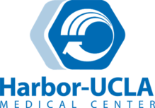
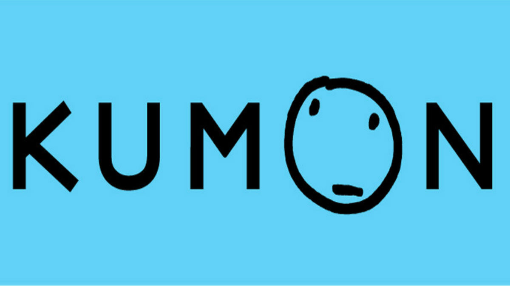

Portfolio




My name is Shreya Agrawal and I am a 2nd year Biology major attending University of California, Riverside. I graduated from Palos Verdes Peninsula High School in 2018. My professional experience includes working at LA BioMed as a Non-compensated Appointee from July 2019-September 2019. I worked for a research project in the Infectious Diseases department, through which I collected specimen samples from patients in the Intensive Care Unit at Harbor UCLA hospital and completed laboratory procedures to test the samples.
Through Dynamic Genome lab course, a course I took at UCR Fall quarter of my 1st year, I learned several lab techniques that I can use in future research opportunities. I gained experience in several lab technologies such as PCR, gel electrophoresis, DNA sequence alignment programs (BLAST and MUSCLE), and spectrophotometry. Some important lab techniques that I developed include using micropipettes, making and running gels for PCR, extracting DNA, and forming dilutions of different concentrations. I have been able to use these skills to amplify genes in DNA in plants and then in spider silk genes for our research project. These skills would be useful in a lab because a biology lab dealing with DNA and proteins may use PCR and may use pipetting and spectrophotometry, which I am familiar with. Additionally, through the spider silk gene research project, I have learned how to analyze genes and compare sequences, which would be useful in comparing different DNA sequences used in testing in a lab.
Additionally, I interned at Ocean Front Urgent Care from June 2018-September 2018. At a local urgent care in my community, I worked as a non-compensated receptionist where I handled different tasks including checking patients in, attending the phone, and handling insurance matters. From August 2016-August 2018, I worked at
Kumon Palos Verdes Center as a paid tutor working 4 hours per week. I taught Math and English to children in Kindergarten-12th grade. Another tutoring experience I have is
Ranger Woodland Tutoring Company from April 2017-June 2018. I worked at this tutoring company through my high school in 11th and 12th grade tutoring kids of all ages in subjects such as Math, Science, and English. In terms of volunteer work, I was a part of Las Hermanas Volunteer Group from September 2012- June 2018. I volunteered more than 120 hours. In this volunteer group, I participated in a variety of community-related events such as working at homeless shelters, helping out at local schools in my community, and working at churches. Lastly, I was a part of Ready, Willing, and Able, a dance program for special needs students. I was a Volunteer Mentor from September 2016- January 2017 for 1 hour/week. As a mentor, I ensured that the students learned the dances, and I did other activities with them such as choreographing solo and duet dances for their annual showcase.
I worked for a research project in the Infectious Diseases department, through which I collected specimen samples from patients in the Intensive Care Unit at Harbor UCLA hospital and completed laboratory procedures to test the samples.
At a local urgent care in my community, I worked as a non-compensated receptionist where I handled different tasks including checking patients in, attending the phone, and handling insurance matters.
I worked 4 hours per week at Kumon teaching Math and English to children in Kindergarten-12th grade.